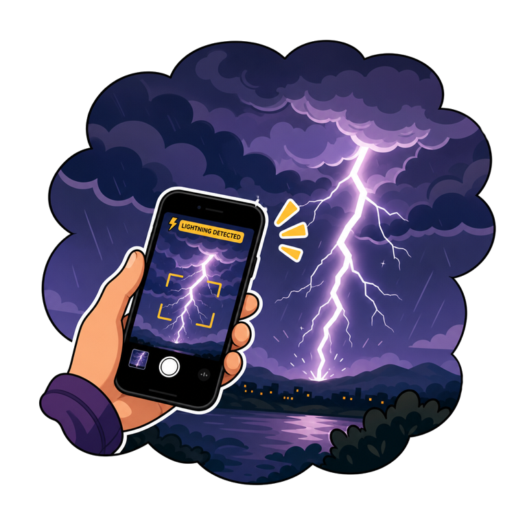
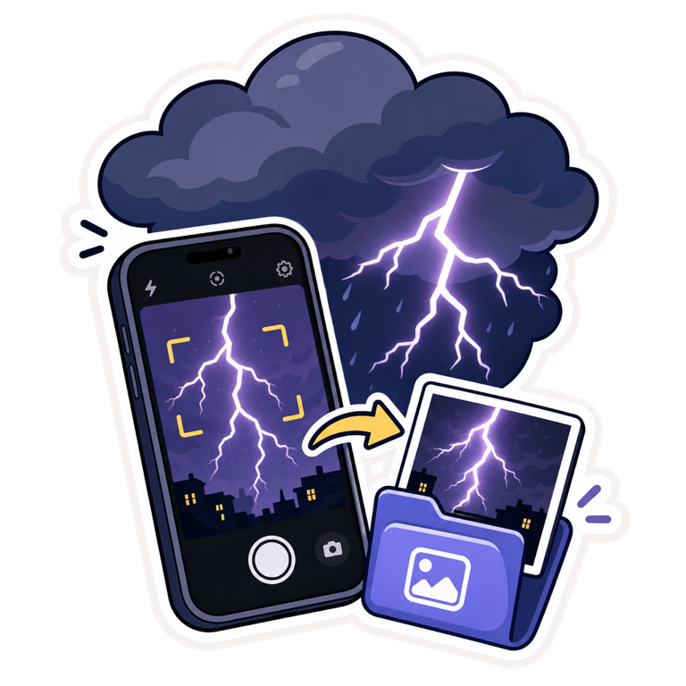
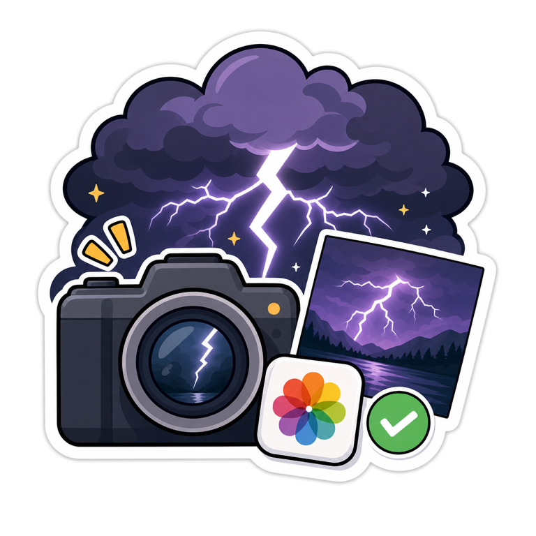

Lightning strikes.
ThunderCam catches it.
Point your iPhone at the storm — ThunderCam watches the sky and saves a photo series the instant lightning flashes. No timing, no luck, no account. Fully offline.
How it works

1Point at the storm
Mount the phone or hold it steady facing the sky. Press start — that's the whole setup.

2It catches the flash
The camera analyses every frame in real time and saves a photo series around each strike — automatically.

3Keep the best
Swipe through the catches: right to keep, left to drop. Keepers land in your photo library.
Built for storm nights
Storm mode
Exposure adapts to day and night by itself — or take full manual control: ISO, shutter, EV, sensitivity, pause.
Motion filter
While you're adjusting or carrying the phone, nothing is saved — no junk shots from a shaking camera.
Catch alert
A sound and a tap the instant a strike is saved — watch the sky, not the screen. Plus a screen-dim mode for long nights.